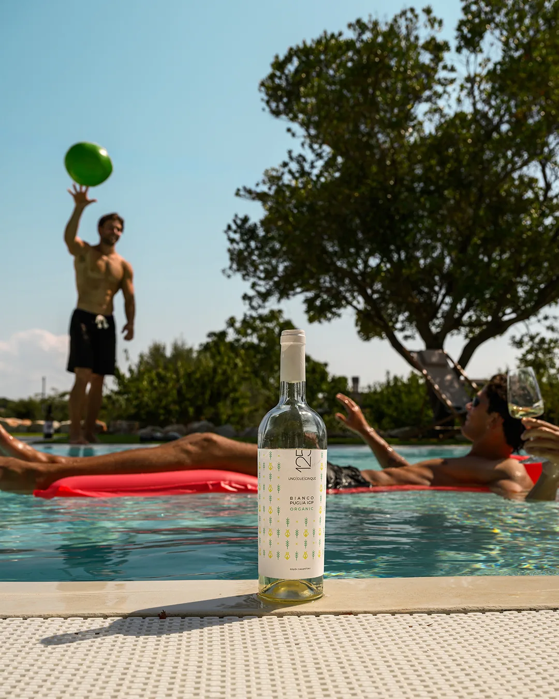

Prova
Cambio
Onda
Scegli il mood
Chiudi

Botanica
Una sala colorata e una pianta per ogni collezione.
Entra
Fotografia
Le fotografie di Instagram, a tutto schermo.
Entra
Botanica
Una sala colorata e una pianta per ogni collezione.
Entra
Fotografia
Le fotografie di Instagram, a tutto schermo.
Entra